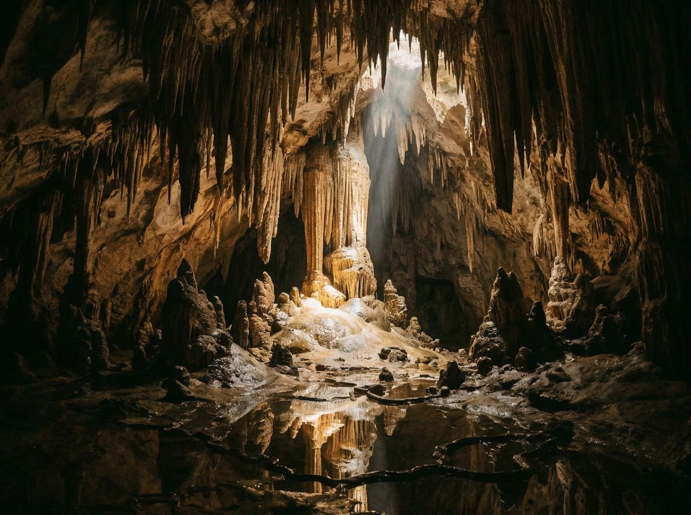
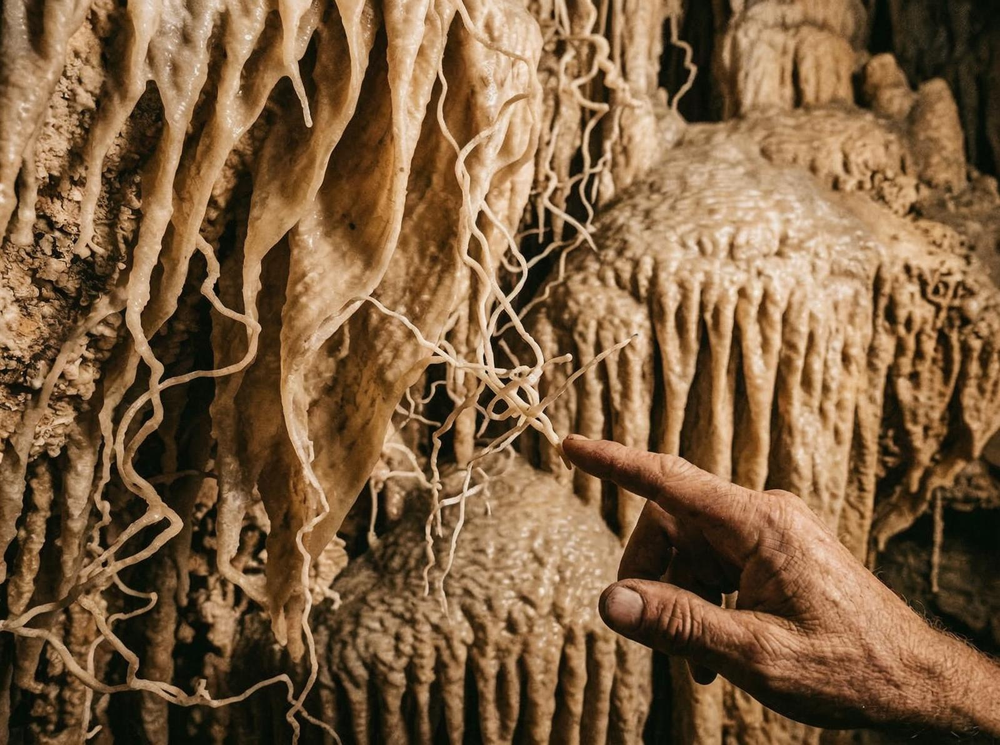

Coordonatele îmi sunt notate în agendă: 45° 06′ 48″ N 23° 48′ 00″ E. Peștera Ascunsă. Situată pe teritoriul administrativ al comunei Polovragi, județul Gorj. Un nume simplu, dar locul e orice altceva decât simplu. E peșteră. E miracol. E artă.
Puțini știu că Peștera Ascunsă se află la o altitudine de 850 metri, cu o lungime de 125 de metri. Nu e o peșteră mare. Dar e densă. Fiecare metru are ceva spectaculos de oferit. Fiecare formațiune povestește o poveste despre timp.
Interesant e că peștera e un miracol al sculpturii în calcar. Apa a sculptat formațiuni care par opera unui artist, nu a naturii. Coloane, stalactite, stalagmite — toate create de picătură, de secundă, de secol.

Și iată ce e fascinant: intrarea în peșteră e ascunsă sub un perete în care se deschide o gaură suficientă pentru intrarea unui om. Nu e evidentă. Trebuie să știi unde să cauți. Trebuie să știi cine te-a învățat.
Detaliul care contează e că peștera e situată în Munții Parâng, o zonă care e plină de pesteri. Dar Peștera Ascunsă e specială. E mai puțin vizitată, mai puțin cunoscută, dar nu mai puțin spectaculoasă.
Problema e că puțini știu de ea. Peștera Ascunsă nu e în ghidurile turistice principale. Nu e pe listele must-see. E acolo, în comuna Polovragi, așteptând să fie descoperită. Oamenii merg la alte peșteri, la Peștera Muierilor, la Peștera Polovragi. Dar Peștera Ascunsă rămâne în umbră.

Și totuși există. E acolo, la 850 metri, oferind o vedere care nu se găsește în alte locuri. Oamenii care au găsit-o o admiră. O împărtășesc. Dar totuși, puțini știu că e un miracol al sculpturii în calcar.
Lăsăm romantismul la o parte. E simplu. Peștera are nevoie de protecție. Calcarul are nevoie de respect. România are nevoie să învețe că geologia nu e doar despre ce extragem, ci și despre ce admirăm.
Nu totul e vizibil din drum. România are straturi — peșteri ascunse, formațiuni care nu se găsesc în alte locuri, natură care a creat ceva spectaculos. Peștera Ascunsă e una din ele.
Probabil că nu putem să ne întoarcem la același nivel. Dar putem învăța. Putem învăța că geologia nu e doar despre ce vedem, ci și despre ce nu vedem. Și că, uneori, cele mai importante lucruri sunt cele pe care le-am uitat.
Peștera Ascunsă e o amintire. O amintire a ceea ce natura a creat, a ceea ce apa a sculptat, a ceea ce țara noastră oferă. Și o amintire a ceea ce putem fi, dacă învățăm din trecut.